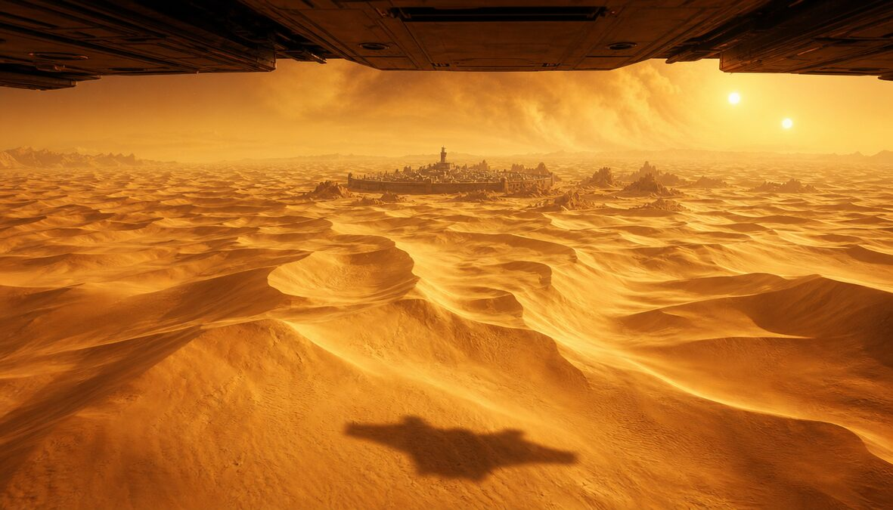
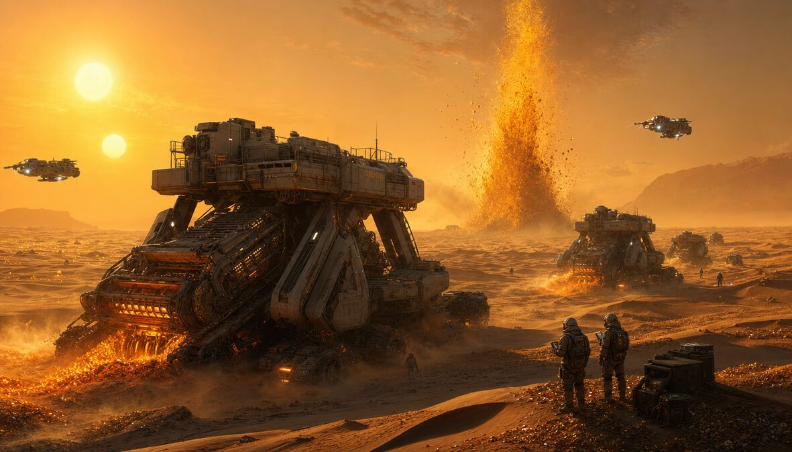
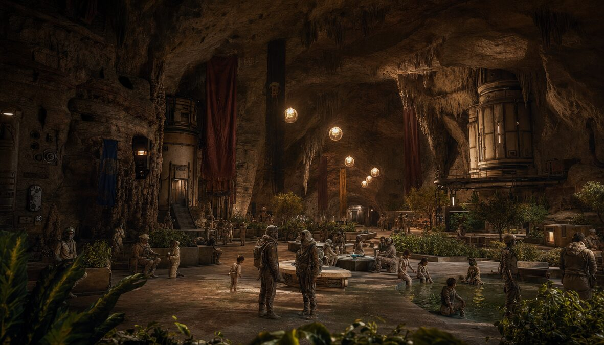
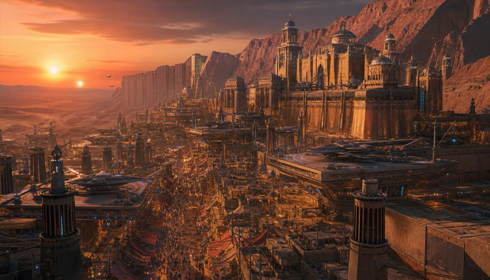

🪱 The Reception Station
The Spice Was Waiting
"They crossed the black between stars. They arrived on sand. The sand was alive. The sand was the point."
Arrakis · Dune · Desert Planet · The Spice Must Flow
6 visions of the desert planet that holds the key to the universe




From Reception Station to Deep Desert — every zone serves the Spice
The first thing humanity built on Arrakis. Carved into the Shield Wall. Every colonist from Earth passes through here. Water ration assigned. Stillsuit fitted. New name optional. Old name remembered.
Capital of Arrakis. Built against the mountain wall that blocks the worst storms. Palace of the ruler. Markets selling everything except water cheaply. Every rooftop catches moisture. Every alley knows your name.
No human controls the deep desert. The sandworms rule. 400 meters of living god beneath your feet. Walk without rhythm or the sand swallows you. The Spice blooms here — random, violent, priceless.
Underground Fremen communities. Hidden in the rock for 10,000 years. Water stored in cisterns so deep they echo. Gardens fed by dew catchers. Children born in darkness who dream of green. Every sietch is a family. Every family is a nation.
The reason the universe cares about a desert. Massive harvesters crawl the sand extracting melange while spotters watch for wormsign. When the ground shakes, you have 4 minutes. The Spice funds empires. The Spice is life. The Spice is also death.
Sacred place where the dead give their water back to the tribe. Every body yields its moisture. No waste. No sentiment. The tribe's water is the tribe's survival. The Water Master knows every drop by name.
The secret dream: turn Arrakis green. Wind traps. Dew collectors. Underground reservoirs. 300 years of hidden work. One tree at a time. The desert people planting a future they will never see. The most patient revolution on any planet.
Where colonists become desert people. Stillsuit maintenance. Sand-walking technique. Worm-riding basics (advanced: 10-year program). Knife fighting. Water discipline. The desert will teach you or kill you. This place tries teaching first.
Deep in the oldest sietch. Where the concentrated melange opens the inner eye. Past and future fold together. Not everyone survives the vision. Those who do see the path. The blue-within-blue eyes mark them forever. They become the navigators of human destiny.
"Earth gave them the dream. The Departure gave them the ship. Arrakis gave them the reason to keep going."
65,000 years of dreaming. Then they left. Then they arrived.
"They crossed 200 light-years to find a desert. In the desert, they found the thing that makes the future possible. The Spice doesn't care where you're from. It cares whether you can see."
بلاد الرمل — The Land of Sand